Modeling Gridded LPV Systems
Contents
Introduction
Let 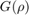 represent a state-space system, which depends on Mach (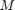) and altitude (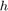) values, that has the standard form:
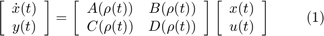
where 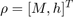.
A grid-based LPV model of this system is a collection of linearizations on a gridded domain of parameter values, as seen in Figure 1. Each linearization approximates the system's dynamics in the vicinity of a particular grid point, and the grid of linearizations captures the system's parameter dependence implicitly.
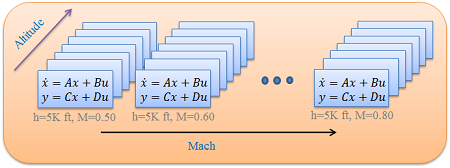
Figure 1: Approximate as a grid-based LPV model on a 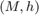 grid.
In LPVTools there are two ways to construct gridded LPV systems. When an analytical model of the LPV system is available it can be constructed using pgrid objects. More commonly, it is constructed directly from numerical data representing the linearized model at various grid points (e.g. data from batch linearization of Simulink models).
Construction from Data
Jacobian Linearization is the predominant method of constructing grid-based LPV models. Lets assume 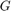 has been linearized at a grid of Mach and altitude values: 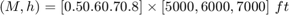 yielding a 4x3 ss array of linearizations. The process of creating a gridded LPV model from this data is as follows:
Load Gss, a 4x3 ss array of linearizations of . Every model in the ss array shares the same state vector, input vector, and output vector. This is required for the the construction of pss systems.
load GData
size(Gss)
4x3 array of state-space models. Each model has 1 outputs, 1 inputs, and 1 states.
Define an rgrid object to represent the grid of Mach and altitude values:
Mach = [0.5 0.6 0.7 0.8];
altitude = [5000,6000,7000];
Domain = rgrid({'M','h'},{Mach,altitude})
RGRID with the following parameters: M: Gridded real, 4 points in [0.5,0.8], rate bounds [-Inf,Inf]. h: Gridded real, 3 points in [5e+03,7e+03], rate bounds [-Inf,Inf].
Combine the state-space array in Gss with the rgrid object to form a pss:
Glpv = pss(Gss,Domain)
PSS with 1 States, 1 Outputs, 1 Inputs, Continuous System. The PSS consists of the following blocks: M: Gridded real, 4 points in [0.5,0.8], rate bounds [-Inf,Inf]. h: Gridded real, 3 points in [5e+03,7e+03], rate bounds [-Inf,Inf].
Note that an explicit model of the parameter dependence in is not required to construct Glpv. Instead the array of linearizations captures the parameter dependence of implicitly. This is an advantage when dealing with complex nonlinear models, for which an analytical linearization may not be available.
Construction from analytical model
Lets assume an analytical model of is available:
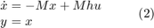
In this case the pss can be constructed using a pgrid object. The pgrid represents a time-varying real parameter and its values.
Define the Mach number as a time-varying parameter with 4 points in the range [0.5 0.8]
M = pgrid('M',0.5:0.1:0.8)
Gridded real parameter "M" with 4 points in [0.5,0.8] and rate bounds [-Inf,Inf].
Define thealtitude as a time-varying parameter with 3 points in the range [5000 7000]
h = pgrid('h',[5000 6000 7000])
Gridded real parameter "h" with 3 points in [5e+03,7e+03] and rate bounds [-Inf,Inf].
Define the pss representation of :
Glpv2 = ss(-M,M*h,1,0)
PSS with 1 States, 1 Outputs, 1 Inputs, Continuous System. The PSS consists of the following blocks: M: Gridded real, 4 points in [0.5,0.8], rate bounds [-Inf,Inf]. h: Gridded real, 3 points in [5e+03,7e+03], rate bounds [-Inf,Inf].
A study of the pointwise LTI dynamics
A Bode plot of Glpv demonstrates how the dynamics of of change as a function of Mach and altitude. Each frequency response in the Bode plot corresponds to the LTI dynamics at a single grid point, when the Mach and altitude is held fixed at that grid point.
bode(Glpv)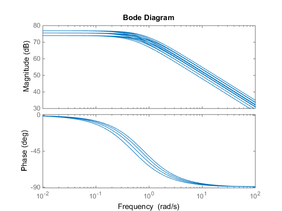
The dynamics at a particular grid point at easily retrieved from the pss using the .value method:
Grab the LTI system associated with 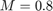 and 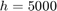:
Gpoint = Glpv.value('M',0.8,'h',5000);
Compare the dynamics associated with and against the dynamics at the other points:
bode(Glpv) hold on bode(Gpoint,'r.')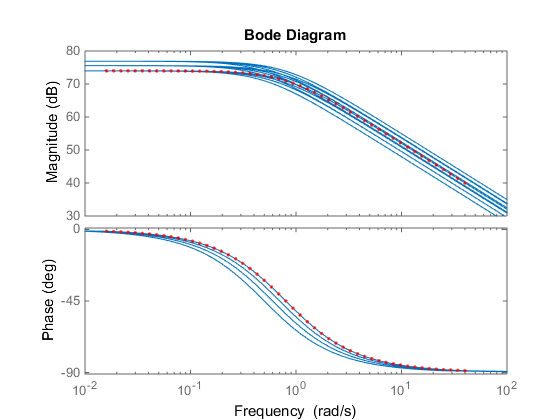
Its also possible to retrieve the data associated with several grid points. To illustrate this we will look at the Bode plot of the dynamics associated with and 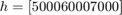.
Start by grabbing the data associated with and
Gmach = lpvsplit(Glpv,'M',0.8)
PSS with 1 States, 1 Outputs, 1 Inputs, Continuous System. The PSS consists of the following blocks: M: Gridded real, 1 points in [0.8,0.8], rate bounds [-Inf,Inf]. h: Gridded real, 3 points in [5e+03,7e+03], rate bounds [-Inf,Inf].
Compare the dynamics associated with and against the dynamics at the other points:
bode(Glpv) hold on bode(Gmach,'k.')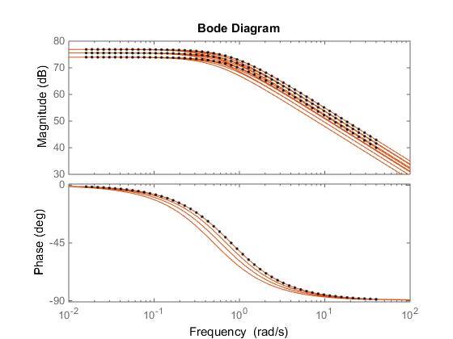
The pointwise gain of Glpv is computed using the norm function. The results are returned as a pmat object, representing a parameter varying matrix:
ng = norm(Glpv,inf)
PMAT with 1 rows and 1 columns. The PMAT consists of the following blocks: M: Gridded real, 4 points in [0.5,0.8], rate bounds [-Inf,Inf]. h: Gridded real, 3 points in [5e+03,7e+03], rate bounds [-Inf,Inf].
ng is an array of double values arranged on a grid of Mach and altitude values. ng contains the infinity norm of Glpv computd pointwise at each of the grid points in Domain. Lets plot how the value of the infinity norm changes as a function of Mach and altitude:
rcplot(ng)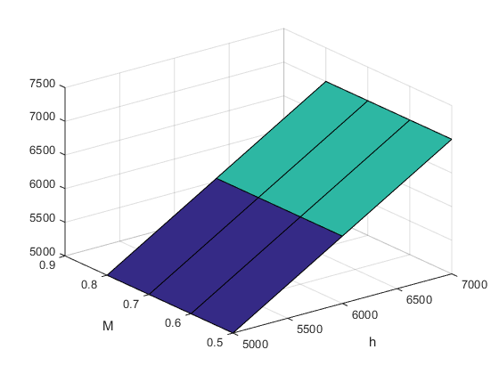
Properties of a gridded LPV model
The time-varying parameters that underlie the gridded LPV objects can be accessed through the "Parameter" field.
Glpv.Parameter
ans =
M: [1x1 pgrid]
h: [1x1 pgrid]
It is possible to change the properties of the time-varying parameters by accessing their properties trough the "Parameter" field. Lets change the rate-bounds of the parameter M to be 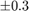
Glpv.Parameter.M.RateBounds = [-0.3 0.3]
PSS with 1 States, 1 Outputs, 1 Inputs, Continuous System. The PSS consists of the following blocks: M: Gridded real, 4 points in [0.5,0.8], rate bounds [-0.3,0.3]. h: Gridded real, 3 points in [5e+03,7e+03], rate bounds [-Inf,Inf].